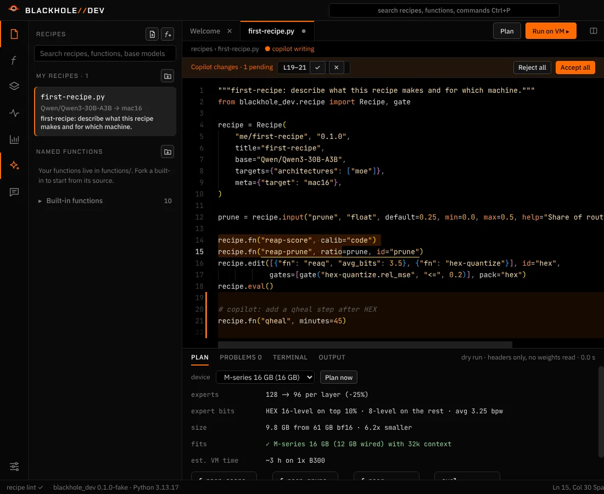

<title>BlackHole-Harness</title>
<meta name="claude:viewport-fit-sides" content="cover">
<meta name="description" content="Shrink any open-weight model until it runs on your own PC: REAP pruning, distillation and HEX per-expert codebooks. Qwen3.6-35B-A3B at 9.8 GB, 67.8 tok/s on a 16 GB MacBook Air. Open source: pipeline, BlackHole-Dev desktop app, runtime.">
<link rel="preconnect" href="https://fonts.googleapis.com">
<link rel="preconnect" href="https://fonts.gstatic.com" crossorigin>
<link rel="stylesheet" href="https://fonts.googleapis.com/css2?family=Chakra+Petch:wght@500;600;700&family=IBM+Plex+Sans:wght@400;500;600&family=JetBrains+Mono:wght@400;600&display=swap">
<style>
/* Layout: one dark column falling toward the hole. Hero = live terminal render of the
   black hole + banner; then numbers, techniques, the three parts, the dev app, recipes, install, targets. Deliberately
   single-theme: the page is the inside of the TUI. */
:root {
  color-scheme: dark;
  --void: #000000;     /* event horizon: background */
  --ash: #4a0d02;      /* quiet borders */
  --crimson: #9e1b07;  /* frames */
  --redshift: #d7261e; /* warnings, negatives */
  --ember: #ff6a00;    /* primary */
  --flare: #ffae42;    /* highlights */
  --photon: #f5efe6;   /* the bit of white */
  --text: #f0dccb;     /* body */
  --dim: #a2735b;      /* secondary text (lifted from TUI dim for contrast on web) */
  --panel: #0c0402;    /* faint lit surface */
  --display: "Chakra Petch", "Arial Narrow", system-ui, sans-serif;
  --body: "IBM Plex Sans", system-ui, -apple-system, "Segoe UI", sans-serif;
  --mono: "JetBrains Mono", ui-monospace, "SFMono-Regular", Menlo, Consolas, monospace;
  --wrap: 1120px;
}
* { box-sizing: border-box; }
html { background: var(--void); }
body { margin: 0; background: var(--void); color: var(--text); font: 400 17px/1.6 var(--body); }
a { color: var(--flare); text-underline-offset: 3px; }
a:focus-visible, button:focus-visible { outline: 2px solid var(--flare); outline-offset: 3px; }
::selection { background: var(--ember); color: var(--void); }

.wrap { max-width: var(--wrap); margin: 0 auto;
  padding-left: max(16px, env(safe-area-inset-left, 0px));
  padding-right: max(16px, env(safe-area-inset-right, 0px)); }
section { padding-block: 88px 0; }
.eyebrow { font: 600 12px/1 var(--mono); letter-spacing: .14em; text-transform: uppercase; color: var(--ember); display: flex; align-items: center; gap: 10px; }
.eyebrow::before { content: ""; width: 8px; height: 8px; background: var(--ember); border-radius: 50%; box-shadow: 0 0 10px var(--ember); }
h1, h2, h3 { font-family: var(--display); color: var(--photon); text-wrap: balance; margin: 0; letter-spacing: -.01em; }
h2 { font-size: clamp(30px, 4.4vw, 46px); line-height: 1.05; font-weight: 700; margin-top: 16px; max-width: 22ch; }
h3 { font-size: 21px; font-weight: 600; line-height: 1.2; }
p { margin: 0; }
.lede { color: var(--text); max-width: 62ch; margin-top: 18px; }
.muted { color: var(--dim); }
code, .mono { font-family: var(--mono); font-size: .88em; }

/* ── nav ───────────────────────────────────────── */
.top { position: sticky; top: env(safe-area-inset-top, 0px); z-index: 5; background: rgba(0,0,0,.86); backdrop-filter: blur(6px); border-bottom: 1px solid var(--ash); }
body::before { content: ""; position: fixed; inset: 0 0 auto; height: env(safe-area-inset-top, 0px); z-index: 10; background: var(--void); }
.top .wrap { display: flex; align-items: center; justify-content: space-between; gap: 16px; height: 56px; }
.brand { font: 700 18px/1 var(--display); color: var(--photon); text-decoration: none; display: flex; align-items: center; gap: 10px; letter-spacing: .02em; }
.brand svg { width: 24px; height: 24px; flex: none; }
.brand b { color: var(--ember); font-weight: 700; }
.top nav { display: flex; gap: 22px; font: 500 14px/1 var(--mono); }
.top nav a { color: var(--dim); text-decoration: none; }
.top nav a:hover { color: var(--flare); }
@media (max-width: 720px) { .top nav a:not(.gh) { display: none; } }

/* ── hero ──────────────────────────────────────── */
.hero { padding-block: 48px 0; }
.banner svg { display: block; width: 100%; max-width: 700px; height: auto; }
.banner text { font: 600 1.7px var(--mono); fill: var(--photon); }
.hero-grid { display: grid; grid-template-columns: minmax(0, 1fr) minmax(0, 1.05fr); gap: 40px; align-items: center; margin-top: 34px; }
.hero h1 { font-size: clamp(38px, 6vw, 68px); line-height: .98; font-weight: 700; }
.hero h1 em { font-style: normal; color: var(--ember); }
.hero .lede { font-size: 18px; }
.hole { display: flex; justify-content: center; min-width: 0; }
.hole canvas { display: block; }
.cta { display: flex; flex-wrap: wrap; gap: 12px; margin-top: 30px; align-items: stretch; }
.cmd { display: flex; align-items: center; gap: 12px; background: var(--panel); border: 1px solid var(--crimson); padding: 12px 12px 12px 16px; font: 400 15px/1.2 var(--mono); color: var(--photon); min-width: 0; max-width: 100%; }
.cmd .p { color: var(--ember); }
.cmd code { font-size: inherit; overflow-x: auto; white-space: nowrap; }
.copy { font: 600 12px/1 var(--mono); text-transform: uppercase; letter-spacing: .1em; background: transparent; color: var(--flare); border: 1px solid var(--ash); padding: 8px 10px; cursor: pointer; flex: none; }
.copy:hover { background: var(--ember); color: var(--void); border-color: var(--ember); }
.btn { display: inline-flex; align-items: center; font: 600 15px/1 var(--mono); padding: 0 20px; min-height: 48px; background: var(--ember); color: var(--void); text-decoration: none; }
.btn:hover { background: var(--flare); }
.status { margin-top: 18px; font: 400 13px/1.5 var(--mono); color: var(--dim); }
.status b { color: var(--flare); font-weight: 600; }

/* ── facts strip ───────────────────────────────── */
.facts { margin-top: 64px; border-block: 1px solid var(--ash); }
.facts .wrap { display: grid; grid-template-columns: repeat(4, minmax(0, 1fr)); }
.fact { padding-block: 22px; padding-right: 16px; }
.fact + .fact { border-left: 1px solid var(--ash); padding-left: 20px; }
.fact .n { font: 700 30px/1 var(--display); color: var(--photon); font-variant-numeric: tabular-nums; }
.fact .n small { font-size: 16px; color: var(--ember); margin-left: 2px; }
.fact .l { font-size: 14px; color: var(--dim); margin-top: 8px; }
@media (max-width: 760px) {
  .facts .wrap { grid-template-columns: repeat(2, minmax(0, 1fr)); }
  .fact:nth-child(3) { border-left: 0; padding-left: 0; }
  .fact:nth-child(n+3) { border-top: 1px solid var(--ash); }
}

/* ── results chart ─────────────────────────────── */
.chart { margin-top: 40px; display: grid; gap: 34px; }
.model h3 { display: flex; flex-wrap: wrap; align-items: baseline; gap: 4px 12px; }
.model h3 span { font: 400 13px/1 var(--mono); color: var(--dim); }
.rows { margin-top: 14px; display: grid; gap: 10px; }
.row { display: grid; grid-template-columns: 210px minmax(0, 1fr) 118px; gap: 16px; align-items: center; }
.row .name { font-size: 14px; color: var(--text); line-height: 1.3; }
.row .name b { color: var(--photon); font-weight: 600; display: block; }
.track { position: relative; height: 28px; background: repeating-linear-gradient(90deg, transparent 0 calc(10% - 1px), #1a0703 calc(10% - 1px) 10%); }
.bar { height: 100%; width: var(--w); background: var(--ash); display: flex; align-items: center; }
.bar.ours { background: linear-gradient(90deg, var(--crimson), var(--ember) 70%, var(--flare)); box-shadow: 0 0 18px rgba(255,106,0,.35); }
.bar.old { background: var(--crimson); }
.gb { position: absolute; top: 50%; transform: translateY(-50%); left: calc(var(--w) + 10px); font: 600 14px/1 var(--mono); color: var(--photon); font-variant-numeric: tabular-nums; white-space: nowrap; }
.row.full .gb { left: auto; right: 10px; color: var(--photon); }
.kl { font: 400 13px/1 var(--mono); color: var(--dim); font-variant-numeric: tabular-nums; text-align: right; white-space: nowrap; }
.kl b { font-weight: 600; }
.kl.good b { color: var(--flare); }
.kl.bad b { color: var(--redshift); }
.axis { display: grid; grid-template-columns: 210px minmax(0, 1fr) 118px; gap: 16px; font: 400 12px/1 var(--mono); color: var(--dim); }
.axis div { display: flex; justify-content: space-between; font-variant-numeric: tabular-nums; }
.note { margin-top: 26px; font-size: 14px; color: var(--dim); max-width: 75ch; }
@media (max-width: 680px) {
  .row, .axis { grid-template-columns: minmax(0, 1fr) auto; gap: 6px 12px; }
  .row .name { grid-column: 1 / -1; }
  .axis > span:first-child { display: none; }
  .axis > span:last-child { display: none; }
}

.lessons { margin-top: 44px; display: grid; grid-template-columns: repeat(3, minmax(0, 1fr)); gap: 0; border-top: 1px solid var(--ash); }
.lesson { padding: 20px 20px 0 0; }
.lesson + .lesson { padding-left: 20px; border-left: 1px solid var(--ash); }
.lesson .tag { font: 600 11px/1 var(--mono); letter-spacing: .12em; text-transform: uppercase; }
.lesson .tag.win { color: var(--flare); }
.lesson .tag.loss { color: var(--redshift); }
.lesson p { margin-top: 10px; font-size: 15px; }
@media (max-width: 760px) {
  .lessons { grid-template-columns: minmax(0, 1fr); }
  .lesson + .lesson { padding-left: 0; border-left: 0; border-top: 1px solid var(--ash); margin-top: 20px; }
}

/* ── terminal / screenshots ────────────────────── */
.split { display: grid; grid-template-columns: minmax(0, .9fr) minmax(0, 1.1fr); gap: 40px; margin-top: 40px; align-items: start; }
@media (max-width: 900px) { .split { grid-template-columns: minmax(0, 1fr); } }
.term { border: 1px solid var(--crimson); background: var(--panel); }
.term .bar-t { display: flex; justify-content: space-between; border-bottom: 1px solid var(--ash); padding: 8px 14px; font: 400 12px/1 var(--mono); color: var(--dim); }
.term pre { margin: 0; padding: 18px; overflow-x: auto; font: 400 14px/1.75 var(--mono); color: var(--photon); }
.term .c { color: var(--dim); }
.term .p { color: var(--ember); }
.term .o { color: var(--flare); }
.shot { margin: 0; border: 1px solid var(--ash); background: #050100; }
.shot img { display: block; width: 100%; height: auto; }
.shot figcaption { font: 400 13px/1.5 var(--mono); color: var(--dim); padding: 10px 14px; border-top: 1px solid var(--ash); }
.steps { list-style: none; padding: 0; margin: 24px 0 0; display: grid; gap: 18px; }
.steps li { display: grid; grid-template-columns: 34px minmax(0, 1fr); gap: 12px; }
.steps li span { font: 700 18px/1.3 var(--display); color: var(--ember); }
.steps li p { font-size: 15px; }
.steps b { color: var(--photon); font-weight: 600; }
.steps code { color: var(--ember); overflow-wrap: anywhere; }

/* ── schemas ───────────────────────────────────── */
.toml { counter-reset: ln; }
.toml .k { color: var(--flare); }
.toml .s { color: var(--text); }
.toml .h { color: var(--ember); }
.toml .c { color: var(--dim); }
.ask { margin-top: 18px; border-left: 2px solid var(--ember); padding: 4px 0 4px 16px; font-size: 15px; }
.ask q { color: var(--photon); font-family: var(--mono); font-size: 14px; }
.chips { display: flex; flex-wrap: wrap; gap: 8px; margin-top: 14px; }
.chip { font: 400 13px/1 var(--mono); border: 1px solid var(--ash); padding: 7px 10px; color: var(--text); }
.chip b { color: var(--flare); font-weight: 600; }

/* ── targets ───────────────────────────────────── */
.targets { margin-top: 36px; display: grid; grid-template-columns: repeat(4, minmax(0, 1fr)); border-top: 1px solid var(--ash); border-left: 1px solid var(--ash); }
.t { border-right: 1px solid var(--ash); border-bottom: 1px solid var(--ash); padding: 16px 18px; }
.t b { display: block; font: 600 16px/1.2 var(--display); color: var(--photon); }
.t span { font: 400 13px/1.4 var(--mono); color: var(--dim); }
.t span i { font-style: normal; color: var(--flare); }
@media (max-width: 760px) { .targets { grid-template-columns: repeat(2, minmax(0, 1fr)); } }

/* ── techniques ────────────────────────────────── */
.techs { margin-top: 40px; display: grid; grid-template-columns: repeat(3, minmax(0, 1fr)); gap: 1px; background: var(--ash); border: 1px solid var(--ash); }
.tech { background: var(--void); padding: 22px 20px 24px; display: grid; gap: 10px; align-content: start; min-width: 0; }
.tech .ab { font: 700 26px/1 var(--display); color: var(--ember); letter-spacing: .02em; display: flex; align-items: baseline; gap: 10px; flex-wrap: wrap; }
.tech .ab span { font: 600 10.5px/1 var(--mono); letter-spacing: .12em; text-transform: uppercase; color: var(--flare); border: 1px solid var(--ash); padding: 4px 6px; }
.tech .full { font: 400 12.5px/1.4 var(--mono); color: var(--dim); }
.tech p { font-size: 15px; }
.tech .proof { font: 400 12.5px/1.5 var(--mono); color: var(--text); border-left: 2px solid var(--ember); padding-left: 10px; }
@media (max-width: 900px) { .techs { grid-template-columns: repeat(2, minmax(0, 1fr)); } }
@media (max-width: 560px) { .techs { grid-template-columns: minmax(0, 1fr); } }

/* ── three parts ───────────────────────────────── */
.parts { margin-top: 40px; display: grid; grid-template-columns: repeat(3, minmax(0, 1fr)); gap: 20px; }
.part { border: 1px solid var(--crimson); background: var(--panel); padding: 22px 20px; display: flex; flex-direction: column; gap: 12px; min-width: 0; }
.part .num { font: 600 12px/1 var(--mono); color: var(--ember); letter-spacing: .1em; text-transform: uppercase; }
.part h3 { font-size: 23px; }
.part p { font-size: 15px; }
.part code { white-space: nowrap; }
.part ul { margin: 0; padding-left: 18px; font-size: 14.5px; display: grid; gap: 6px; }
.part ul li::marker { color: var(--ember); }
.part .repo { margin-top: auto; padding-top: 12px; border-top: 1px solid var(--ash); font: 400 13px/1.4 var(--mono); color: var(--dim); overflow-wrap: anywhere; }
.part .repo b { color: var(--flare); font-weight: 600; }
@media (max-width: 900px) { .parts { grid-template-columns: minmax(0, 1fr); } }

/* ── dev app ───────────────────────────────────── */
.feats { list-style: none; padding: 0; margin: 24px 0 0; display: grid; gap: 14px; }
.feats li { font-size: 15px; padding-left: 18px; position: relative; }
.feats li::before { content: ""; position: absolute; left: 0; top: .62em; width: 7px; height: 7px; background: var(--ember); }
.feats b { color: var(--photon); font-weight: 600; }
.duo { display: grid; grid-template-columns: minmax(0, 1fr) minmax(0, 1fr); gap: 20px; margin-top: 20px; }
@media (max-width: 760px) { .duo { grid-template-columns: minmax(0, 1fr); } }
.themes { margin-top: 20px; display: grid; grid-template-columns: repeat(4, minmax(0, 1fr)); gap: 10px; }
.themes figure { margin: 0; border: 1px solid var(--ash); background: #050100; min-width: 0; }
.themes img { display: block; width: 100%; height: auto; aspect-ratio: 55 / 28; }
.themes figcaption { font: 400 12px/1 var(--mono); color: var(--dim); padding: 8px 10px; border-top: 1px solid var(--ash); }
@media (max-width: 760px) { .themes { grid-template-columns: repeat(2, minmax(0, 1fr)); } }
.py .k { color: var(--flare); }
.py .s { color: var(--text); }
.py .f { color: var(--ember); }
.py .c { color: var(--dim); }

/* ── footer ────────────────────────────────────── */
.end { margin-top: 110px; border-top: 1px solid var(--ash); }
.end .wrap { padding-block: 36px 48px; display: flex; flex-wrap: wrap; justify-content: space-between; gap: 20px; font: 400 13px/1.6 var(--mono); color: var(--dim); }
.end a { color: var(--dim); }
.end a:hover { color: var(--flare); }

@media (max-width: 900px) {
  .hero-grid { grid-template-columns: minmax(0, 1fr); }
  .hole { order: -1; }
}
.hero .cmd { flex: 1 1 100%; font-size: 14px; justify-content: space-between; }
@media (max-width: 520px) { .cmd { font-size: 13px; gap: 8px; padding-left: 12px; } }
@media (prefers-reduced-motion: reduce) { * { scroll-behavior: auto !important; } }
</style>

<header class="top">
  <div class="wrap">
    <a class="brand" href="#top" aria-label="BlackHole-Harness home"><svg viewBox="0 0 24 24" aria-hidden="true"><defs><radialGradient id="mt" gradientUnits="userSpaceOnUse" cx="12" cy="12" r="7.63"><stop offset="0.49" stop-color="#ffae42"/><stop offset="0.64" stop-color="#ff6a00"/><stop offset="0.81" stop-color="#d7261e"/><stop offset="0.92" stop-color="#9e1b07"/><stop offset="1" stop-color="#9e1b07" stop-opacity="0"/></radialGradient><radialGradient id="mb" gradientUnits="userSpaceOnUse" cx="12" cy="12" r="5.95"><stop offset="0.62" stop-color="#ff6a00"/><stop offset="0.79" stop-color="#d7261e"/><stop offset="1" stop-color="#9e1b07" stop-opacity="0"/></radialGradient><linearGradient id="md" gradientUnits="userSpaceOnUse" x1="0.47" y1="0" x2="23.53" y2="0"><stop offset="0" stop-color="#9e1b07"/><stop offset=".22" stop-color="#ff6a00"/><stop offset=".42" stop-color="#f5efe6"/><stop offset=".6" stop-color="#ffae42"/><stop offset=".8" stop-color="#d7261e"/><stop offset="1" stop-color="#9e1b07"/></linearGradient></defs><path d="M0.47 12A11.53 2.65 0 0 1 23.53 12L17.21 12A5.21 1.2 0 0 0 6.79 12Z" fill="url(#md)"/><path d="M0.47 12A11.53 2.65 0 0 1 23.53 12L17.21 12A5.21 1.2 0 0 0 6.79 12Z" fill="#000000" fill-opacity=".45"/><path d="M4.37 12A7.63 7.63 0 0 1 19.63 12L15.72 12A3.72 3.72 0 0 0 8.28 12Z" fill="url(#mt)"/><path d="M6.05 12A5.95 5.95 0 0 0 17.95 12L15.72 12A3.72 3.72 0 0 1 8.28 12Z" fill="url(#mb)"/><circle cx="12" cy="12" r="3.72" fill="#000000"/><circle cx="12" cy="12" r="4.06" fill="none" stroke="#f5efe6" stroke-width="0.68"/><path d="M0.47 12A11.53 2.65 0 0 0 23.53 12L17.21 12A5.21 1.2 0 0 1 6.79 12Z" fill="url(#md)"/></svg>BlackHole<b>·</b>Harness</a>
    <nav aria-label="Sections">
      <a href="#results">results</a>
      <a href="#techniques">techniques</a>
      <a href="#parts">open source</a>
      <a href="#dev">dev app</a>
      <a href="#install">install</a>
      <a class="gh" href="https://github.com/OliverVillson/BlackHole-Harness">github ↗</a>
    </nav>
  </div>
</header>

<main id="top">
  <div class="hero">
    <div class="wrap">
      <div class="banner" id="banner" role="img" aria-label="BLACKHOLE harness"></div>
      <div class="hero-grid">
        <div>
          <h1>Collapse any open model until it fits <em>your&nbsp;machine</em>.</h1>
          <p class="lede">BlackHole-Harness takes a big open-weight model and shrinks it: REAP expert pruning for what you actually use it for, distillation to heal it, then our own per-expert codebook quantization. A 35B coding model now runs at 9.8&nbsp;GB on a 16&nbsp;GB MacBook Air.</p>
          <div class="cta">
            <div class="cmd"><span class="p">$</span><code id="install-cmd">curl -fsSL https://blackholeharness.dev/install.sh | bash</code><button class="copy" type="button" data-copy="install-cmd" id="copy-hero">copy</button></div>
            <a class="btn" href="#results">See the numbers</a>
          </div>
          <p class="status"><b>open source</b> · Apache-2.0 · pipeline, desktop app and runtime · run the line above on any Ubuntu GPU box</p>
        </div>
        <div class="hole"><canvas id="hole" role="img" aria-label="A black hole drawn in orange and red pixels, with a tilted accretion disk"></canvas></div>
      </div>
    </div>
  </div>

  <div class="facts" aria-label="Headline numbers">
    <div class="wrap">
      <div class="fact"><div class="n">65<small>→</small>9.8<small>GB</small></div><div class="l">Qwen3.6-35B-A3B, 6.7× smaller</div></div>
      <div class="fact"><div class="n">~65<small>%</small></div><div class="l">LiveCodeBench v6 at that size</div></div>
      <div class="fact"><div class="n">0.070</div><div class="l">KL to the original, lower is closer</div></div>
      <div class="fact"><div class="n">67.8<small>tok/s</small></div><div class="l">on a 16 GB MacBook Air M5</div></div>
    </div>
  </div>

  <section id="results">
    <div class="wrap">
      <div class="eyebrow">Measured, not promised</div>
      <h2>A 35B coder that fits in a 16&nbsp;GB laptop</h2>
      <p class="lede">The full REAP/Q-HEX recipe on one B300 in about three and a half hours: 31.25% of the experts pruned on code, shortest verified traces and two on-policy distillation rounds, HEX experts with REAQ tiers, then qheal. The whole model sits in memory on a MacBook Air M5 and generates at 67.8&nbsp;tokens per second.</p>

      <div class="chart">
        <div class="model">
          <h3>Qwen3.6-35B-A3B <span>mixture of experts · 256 experts → 176 per layer</span></h3>
          <div class="rows">
            <div class="row full"><div class="name"><b>Original</b>bf16, all experts</div><div class="track"><div class="bar" style="--w:100%"></div><span class="gb" style="--w:100%">≈65 GB</span></div><div class="kl">LCB <b>80.4%</b>*</div></div>
            <div class="row"><div class="name"><b>qwen-mac-qhex</b>REAP 31.25%, HEX, qheal</div><div class="track"><div class="bar ours" style="--w:15.1%"></div><span class="gb" style="--w:15.1%">9.8 GB</span></div><div class="kl good">LCB <b>64.6–65.7%</b></div></div>
          </div>
        </div>
        <div class="model">
          <h3>Qwen3-30B-A3B <span>128 experts, 8 active · KL to the original</span></h3>
          <div class="rows">
            <div class="row full"><div class="name"><b>Original</b>bf16, all experts</div><div class="track"><div class="bar" style="--w:100%"></div><span class="gb" style="--w:100%">57 GB</span></div><div class="kl">KL <b>0</b></div></div>
            <div class="row"><div class="name"><b>Old default</b>keep 50% experts, int8</div><div class="track"><div class="bar old" style="--w:24%"></div><span class="gb" style="--w:24%">13.7 GB</span></div><div class="kl bad">KL <b>0.158</b></div></div>
            <div class="row"><div class="name"><b>GPTQ int4</b>keep 75% experts</div><div class="track"><div class="bar old" style="--w:18.2%"></div><span class="gb" style="--w:18.2%">10.4 GB</span></div><div class="kl good">KL <b>0.034</b></div></div>
            <div class="row"><div class="name"><b>REAQ-HEX</b>keep 75%, 3.5 bpw</div><div class="track"><div class="bar ours" style="--w:16.7%"></div><span class="gb" style="--w:16.7%">9.5 GB</span></div><div class="kl good">KL <b>0.033</b></div></div>
            <div class="row"><div class="name"><b>GPTQ int3</b>keep 75%, 3.25 bpw</div><div class="track"><div class="bar old" style="--w:14.4%"></div><span class="gb" style="--w:14.4%">8.2 GB</span></div><div class="kl bad">KL <b>0.083</b></div></div>
            <div class="row"><div class="name"><b>HEX</b>keep 75%, 3.25 bpw</div><div class="track"><div class="bar ours" style="--w:14.4%"></div><span class="gb" style="--w:14.4%">8.2 GB</span></div><div class="kl good">KL <b>0.054</b></div></div>
          </div>
        </div>
      </div>
      <p class="note">Bars are drawn to each model's original size. *80.4% is Qwen's published LiveCodeBench v6 score for the original; we did not run the original on our bench. The Qwen3.6 range is three distillation runs. Qwen3-30B sizes count the expert weights, which are nearly all of the model; runs on B200 and B300, 23 to 25 October 2026. KL is measured on held-out answers the original wrote.</p>

      <div class="lessons">
        <div class="lesson"><span class="tag win">kept</span><p>For MoE, prune a quarter to three-eighths of the experts, then quantize. Quantize harder before you prune more, and never past half the experts.</p></div>
        <div class="lesson"><span class="tag loss">dropped</span><p>Trimming the output vocabulary (KL 0.070 → 0.389), dropping whole layers, MoEfy-then-prune, round-to-nearest and healing without training all lost.</p></div>
        <div class="lesson"><span class="tag win">kept</span><p>Distillation could not teach shorter thinking, so the server caps it instead: a 16k thinking budget keeps 60% on LiveCodeBench with answers in about four minutes at most.</p></div>
      </div>
      <p class="note">Every chart, with dates and setups: <a href="https://claude.ai/artifact/EPTz8xAKPoPPnQnHHiaYYt">the full results page ↗</a></p>
    </div>
  </section>

  <section id="techniques">
    <div class="wrap">
      <div class="eyebrow">Techniques</div>
      <h2>Built on REAP, with methods that started here</h2>
      <p class="lede">REAP decides which experts a purpose needs. Everything after that is BlackHole-Harness work, and each step is a named function you can open, read and fork.</p>
      <div class="techs">
        <article class="tech">
          <div class="ab">REAP</div>
          <div class="full">Router-weighted Expert Activation Pruning</div>
          <p>Scores every expert by how much it contributes on text about your purpose, like "Debugging Python and Rust", and drops the ones you won't use. Our one-pass grouped scorer is 2.8× faster.</p>
          <div class="proof">Qwen3.6: 31.25% of experts pruned at KL 0.0195, nearly free.</div>
        </article>
        <article class="tech">
          <div class="ab">REAQ <span>original</span></div>
          <div class="full">Router-weighted Expert Activation Quantization</div>
          <p>The same REAP score sets each expert's bit width at a fixed average size, so the experts that matter most keep more precision. MoE only, never 2-bit.</p>
          <div class="proof">Beats a random split of the same bits at 3.5 and 4.0 bpw.</div>
        </article>
        <article class="tech">
          <div class="ab">HEX <span>original</span></div>
          <div class="full">Header-Encoded eXperts</div>
          <p>Each expert carries its own learned 8 or 16 level value table in its header. Weights become 3 or 4 bit indices in 32-weight blocks with FP8 scales, rounded with GPTQ.</p>
          <div class="proof">KL 0.054 vs GPTQ int3 0.083 at 3.25 bpw: 35% less error.</div>
        </article>
        <article class="tech">
          <div class="ab">qheal <span>original</span></div>
          <div class="full">heal after quantization</div>
          <p>Attention, routers and shared experts train around the frozen low-bit experts, through their own rounding. A safety net throws the heal away if held-out KL gets worse.</p>
          <div class="proof">The net discarded a bad heal on Flint (0.307 → 0.402).</div>
        </article>
        <article class="tech">
          <div class="ab">Traces <span>original</span></div>
          <div class="full">shortest verified trace distillation</div>
          <p>The teacher solves each contest problem several times, the tests run, and the student learns from the shortest answer that passes. On-policy rounds then fix its own mistakes.</p>
          <div class="proof">The training behind the 64.6 to 65.7% Qwen3.6 build.</div>
        </article>
        <article class="tech">
          <div class="ab">Gate</div>
          <div class="full">quality and fit checks</div>
          <p>Every recipe checks KL against held-out teacher answers and the real memory footprint, KV cache included. A run fails loudly instead of shipping a broken model.</p>
          <div class="proof">Each model ships with a receipt of every number its run produced.</div>
        </article>
      </div>
    </div>
  </section>

  <section id="parts">
    <div class="wrap">
      <div class="eyebrow">Open source</div>
      <h2>Three parts, all Apache-2.0</h2>
      <div class="parts">
        <article class="part">
          <div class="num">01 · pipeline</div>
          <h3>BlackHole-Harness</h3>
          <p>The pipeline that does the shrinking, on a rented GPU or your own.</p>
          <ul>
            <li>Preset recipes for any Hugging Face model, MoE or dense</li>
            <li>Python recipe files from the desktop app: <code>--recipe my.bhr</code></li>
            <li>A terminal UI with detached jobs that survive a dropped SSH</li>
            <li>MLX, GGUF or safetensors out, with a receipt</li>
          </ul>
          <div class="repo"><a href="https://github.com/OliverVillson/BlackHole-Harness">github.com/OliverVillson/BlackHole-Harness ↗</a></div>
        </article>
        <article class="part">
          <div class="num">02 · desktop app</div>
          <h3>BlackHole-Dev</h3>
          <p>An editor for building your own recipes, down to single weights.</p>
          <ul>
            <li>Recipes as Python, with autocomplete and lint</li>
            <li>Every built-in function opens as source you can fork</li>
            <li>A copilot that writes recipes, plus local chat with your models</li>
            <li>Analysis panel, run on VM, 36 themes</li>
          </ul>
          <div class="repo">github.com/OliverVillson/Blackhole-Dev · <b>repo opens soon</b></div>
        </article>
        <article class="part">
          <div class="num">03 · runtime</div>
          <h3>BlackHole runtime</h3>
          <p>Kernels that run HEX models without unpacking them first.</p>
          <ul>
            <li>HEX Triton MoE kernel for NVIDIA GPUs</li>
            <li>A <code>blackhole-hex</code> plugin for vLLM</li>
            <li>Metal HEX kernels for Apple silicon, through MLX</li>
            <li>Kept apart from the pipeline, so either installs alone</li>
          </ul>
          <div class="repo"><a href="https://github.com/OliverVillson/BlackHole-Harness/tree/main/runtime">BlackHole-Harness/runtime ↗</a></div>
        </article>
      </div>
    </div>
  </section>

  <section id="dev">
    <div class="wrap">
      <div class="eyebrow">BlackHole-Dev</div>
      <h2>A desktop app for taking models apart</h2>
      <div class="split">
        <div>
          <p class="lede" style="margin-top:0">BlackHole-Dev opens any model as parts: layers, heads, routers, experts with their REAP scores, neurons, single weights. A recipe is a Python file that edits those parts with named functions, and the app plans it on your Mac before a GPU is ever rented.</p>
          <ul class="feats">
            <li><b>Monaco editor</b> with recipe autocomplete, signature help, snippets, inline lint and split tab groups.</li>
            <li><b>Copilot</b> that reads, plans and edits recipes, with your own Anthropic key or through Claude Code. Starting a VM or a run always needs your click.</li>
            <li><b>Plan</b> runs the recipe dry from headers only: size, fit, KV cache and GPU time.</li>
            <li><b>Analysis panel</b>: REAP heatmaps, router usage, weight stats, quantization error by format, two models side by side.</li>
            <li><b>Run on VM</b> over SSH with a live job monitor, then <b>chat locally</b> with what you made through any OpenAI-compatible server.</li>
          </ul>
        </div>
        <figure class="shot">
          
          <figcaption>A recipe, a copilot edit waiting for review, and the plan for a 16 GB Mac.</figcaption>
        </figure>
      </div>
      <div class="duo">
        <figure class="shot">
          
          <figcaption>REAP scores per expert and layer in the analysis panel.</figcaption>
        </figure>
        <figure class="shot">
          
          <figcaption>The pipeline's terminal UI on the GPU box.</figcaption>
        </figure>
      </div>
      <h3 style="margin-top:40px">36 themes, from Singularity to Lab Paper</h3>
      <div class="themes">
        <figure><figcaption>Singularity</figcaption></figure>
        <figure><figcaption>Lab Paper</figcaption></figure>
        <figure><figcaption>Blueprint</figcaption></figure>
        <figure><figcaption>Pulsar</figcaption></figure>
        <figure><figcaption>Canopy</figcaption></figure>
        <figure><figcaption>Dune</figcaption></figure>
        <figure><figcaption>Broadsheet</figcaption></figure>
        <figure><figcaption>Dracula</figcaption></figure>
      </div>
    </div>
  </section>

  <section id="recipes">
    <div class="wrap">
      <div class="eyebrow">Recipes</div>
      <h2>Recipes are Python files you can read, share and fork</h2>
      <div class="split">
        <div class="term">
          <div class="bar-t"><span>recipes/qwen_mac_qhex.py</span><span>blackhole_dev</span></div>
<pre class="py"><span class="k">from</span> blackhole_dev.recipe <span class="k">import</span> Recipe

recipe = <span class="f">Recipe</span>(<span class="s">"blackhole/qwen-mac-qhex"</span>, <span class="s">"1.0.0"</span>,
                tags=[<span class="s">"mac"</span>, <span class="s">"code"</span>, <span class="s">"moe"</span>])

recipe.<span class="f">fn</span>(<span class="s">"calibrate"</span>, calib=<span class="s">"code"</span>)
<span class="c"># drop 31.25% of routed experts, calibrated on code</span>
recipe.<span class="f">fn</span>(<span class="s">"reap-gpu"</span>, ratio=0.3125)
<span class="c"># shortest verified traces, then on-policy rounds</span>
recipe.<span class="f">fn</span>(<span class="s">"distil"</span>, calib=<span class="s">"contest"</span>, opd_rounds=2)
<span class="c"># HEX experts, REAQ tiers: top 10% at 16 levels</span>
recipe.<span class="f">fn</span>(<span class="s">"mlx-export"</span>, hex=1, bits=3, hot=0.1)
recipe.<span class="f">fn</span>(<span class="s">"qheal"</span>)</pre>
        </div>
        <div>
          <p class="lede" style="margin-top:0">A recipe names the steps, and every step is a function whose source you can open. Fork <code>distil</code> and your copy replaces the built-in in that recipe. Start from a preset: REAP plus int4, the Mac coder above, or the REAQ codebook lab recipes.</p>
          <div class="chips" aria-label="Preset recipes">
            <span class="chip"><b>qwen-mac-qhex</b> 16 GB Mac coder</span>
            <span class="chip"><b>moe-prune-int4</b> MoE default</span>
            <span class="chip"><b>dense-prune-int4</b> dense default</span>
            <span class="chip"><b>reaq-codebook</b></span>
            <span class="chip"><b>reap-classic</b></span>
            <span class="chip"><b>mac-16gb</b></span>
          </div>
          <h3 style="margin-top:36px">Or describe it in words</h3>
          <p class="ask"><q>Make a recipe like qwen-mac-qhex for Qwen3-30B-A3B, drop the weakest 25% of experts.</q></p>
          <p style="margin-top:14px;font-size:15px">The copilot drafts the recipe from your words and the editor lints it against the functions that actually exist. Changes show as a diff you accept or reject, and nothing runs on a GPU until you click.</p>
        </div>
      </div>
    </div>
  </section>

  <section id="install">
    <div class="wrap">
      <div class="eyebrow">Run it</div>
      <h2>One line on a GPU box, then bring the model home</h2>
      <div class="split">
        <div>
          <div class="term">
            <div class="bar-t"><span>~/ on the GPU box</span><span>bash</span></div>
<pre><span class="p">$</span> curl -fsSL https://blackholeharness.dev/install.sh \
    | bash
<span class="c">  pipeline, TUI, REAPer, runtime, vLLM + HEX plugin</span>
<span class="o">  ✓ installed · run it again to update</span>
<span class="p">$</span> blackhole
<span class="c">  the TUI; reattaches to a running job</span>
<span class="p">$</span> python -m blackhole_pipeline \
    --job ~/jobs/q --recipe my.bhr
<span class="c">  or run a recipe from BlackHole-Dev directly</span></pre>
          </div>
          <ol class="steps">
            <li><span>1</span><p><b>Rent a GPU</b> anywhere you like (we use B200 and B300 on Nebius), or let <code>blackhole up</code> do it. You see the hourly price first.</p></li>
            <li><span>2</span><p><b>Run the one line.</b> It picks the CUDA build your driver can run and installs everything. The same line updates it.</p></li>
            <li><span>3</span><p><b>Pick a model and a recipe</b> in the TUI, or press Run on VM in BlackHole-Dev. Jobs run detached, so a dropped connection doesn't kill a run.</p></li>
            <li><span>4</span><p><b>Copy the result home</b> and serve it with mlx_lm on a Mac, or llama.cpp and Ollama elsewhere.</p></li>
          </ol>
        </div>
        <figure class="shot">
          
          <figcaption>A run in the TUI, aimed at a 32 GB Mac. Demo mode.</figcaption>
        </figure>
      </div>
    </div>
  </section>

  <section id="targets">
    <div class="wrap">
      <div class="eyebrow">Targets</div>
      <h2>Tell it the machine, it sizes the model</h2>
      <p class="lede">Pick where the model will live. Plan checks the fit before a run starts, and the footprint gate checks it again at the end, context window and KV cache included.</p>
      <div class="targets">
        <div class="t"><b>RTX 3060</b><span>12 GB · <i>11 GB</i> budget</span></div>
        <div class="t"><b>RTX 4070</b><span>12 GB · <i>11 GB</i> budget</span></div>
        <div class="t"><b>RTX 4090</b><span>24 GB · <i>22 GB</i> budget</span></div>
        <div class="t"><b>RTX 5090</b><span>32 GB · <i>30 GB</i> budget</span></div>
        <div class="t"><b>Mac 16 GB</b><span>unified · <i>12 GB</i> wired</span></div>
        <div class="t"><b>Mac 32 GB</b><span>unified · <i>24 GB</i> budget</span></div>
        <div class="t"><b>Mac 64 GB</b><span>unified · <i>50 GB</i> budget</span></div>
        <div class="t"><b>CPU, 32 GB</b><span>system RAM · <i>26 GB</i> budget</span></div>
      </div>
    </div>
  </section>

  <section>
    <div class="wrap">
      <div class="cta" style="margin-top:0">
        <div class="cmd"><span class="p">$</span><code id="install-cmd-2">curl -fsSL https://blackholeharness.dev/install.sh | bash</code><button class="copy" type="button" data-copy="install-cmd-2" id="copy-foot">copy</button></div>
        <a class="btn" href="https://github.com/OliverVillson/BlackHole-Harness">Star on GitHub</a>
      </div>
    </div>
  </section>
</main>

<footer class="end">
  <div class="wrap">
    <span>BlackHole-Harness · blackholeharness.dev · Apache-2.0</span>
    <span>Built on REAP expert pruning. Numbers from B200/B300 runs and a MacBook Air M5, October 2026.</span>
  </div>
</footer>

<script>
(() => {
  const HEAT = ["#4a0d02", "#9e1b07", "#d7261e", "#ff6a00", "#ffae42", "#f5efe6"];
  const GRAD = ["#9e1b07", "#d7261e", "#d7261e", "#ff6a00", "#ff6a00", "#ffae42", "#ffae42", "#f5efe6"];
  const BANNER = [
"██████╗ ██╗      █████╗  ██████╗██╗  ██╗██╗  ██╗ ██████╗ ██╗     ███████╗",
"██╔══██╗██║     ██╔══██╗██╔════╝██║ ██╔╝██║  ██║██╔═══██╗██║     ██╔════╝",
"██████╔╝██║     ███████║██║     █████╔╝ ███████║██║   ██║██║     █████╗  ",
"██╔══██╗██║     ██╔══██║██║     ██╔═██╗ ██╔══██║██║   ██║██║     ██╔══╝  ",
"██████╔╝███████╗██║  ██║╚██████╗██║  ██╗██║  ██║╚██████╔╝███████╗███████╗",
"╚═════╝ ╚══════╝╚═╝  ╚═╝ ╚═════╝╚═╝  ╚═╝╚═╝  ╚═╝ ╚═════╝ ╚══════╝╚══════╝"];
  const TAG = "harness";
  // banner: drawn as vector cells so the block letters tile without font seams.
  // Each letter takes one step of the heat gradient; the box-drawing shadow strokes
  // are drawn as the same double lines a terminal shows, in ash. A cell is 1 x 2.
  const W = BANNER[0].length, A = 0.3, B = 0.7, C = 0.75, D = 1.25;
  const solid = x => BANNER.some(l => l[x] === "█");
  const LETTER = [];
  for (let x = 0, n = -1; x < W; x++) { if (solid(x) && !solid(x - 1)) n++; LETTER.push(Math.max(n, 0)); }
  const LETTERS = LETTER[W - 1] + 1;
  const SHADOW = {
    "║": [[[A, 0], [A, 2]], [[B, 0], [B, 2]]],
    "═": [[[0, C], [1, C]], [[0, D], [1, D]]],
    "╗": [[[0, C], [B, C], [B, 2]], [[0, D], [A, D], [A, 2]]],
    "╔": [[[1, C], [A, C], [A, 2]], [[1, D], [B, D], [B, 2]]],
    "╝": [[[0, D], [B, D], [B, 0]], [[0, C], [A, C], [A, 0]]],
    "╚": [[[1, D], [A, D], [A, 0]], [[1, C], [B, C], [B, 0]]],
  };
  const fills = {};
  let lines = "";
  BANNER.forEach((line, y) => [...line].forEach((ch, x) => {
    if (ch === "█") {
      const c = GRAD[Math.floor(LETTER[x] * GRAD.length / LETTERS)];
      fills[c] = (fills[c] || "") + `M${x} ${y * 2}h1v2h-1z`;
    } else if (SHADOW[ch]) {
      for (const seg of SHADOW[ch]) lines += "M" + seg.map(([u, v]) => `${x + u} ${y * 2 + v}`).join("L");
    }
  }));
  const VW = W + 2 + 7;
  document.getElementById("banner").innerHTML =
    `<svg viewBox="0 0 ${VW} ${BANNER.length * 2}" aria-hidden="true">` +
    `<path d="${lines}" fill="none" stroke="${HEAT[0]}" stroke-width=".14"/>` +
    Object.entries(fills).map(([c, d]) => `<path d="${d}" fill="${c}" shape-rendering="crispEdges"/>`).join("") +
    `<text x="${W + 2}" y="${(BANNER.length - 2) * 2 + 1.55}">${TAG}</text></svg>`;

  // the hole: the same lensing model as the TUI's art.py, drawn as square pixels
  const DIN = 1.4, DOUT = 3.1, TILT = 0.17;
  function intensity(x, y, px, t) {
    const r = Math.hypot(x, y);
    if (y >= 0) {
      const rho = Math.hypot(x, y / TILT);
      if (rho >= DIN && rho <= DOUT) {
        const phi = Math.atan2(y / TILT, x);
        const fall = (DOUT - rho) / (DOUT - DIN);
        const beam = 1 + 0.45 * (-x / rho);
        const swirl = 0.9 + 0.1 * Math.sin(phi * 3 + rho * 2 - t);
        return Math.min((0.25 + 0.75 * fall ** 1.4) * beam * swirl, 1);
      }
    }
    if (r < 1) return 0;
    const d = Math.abs(r - 1 - 0.5 * px) / px;  // pixels from the photon ring's centre line
    const ring = d <= 0.6 ? 1 : Math.exp(-(((d - 0.6) / 0.7) ** 2));
    const above = Math.min(1, Math.max(0, 1 - y / 0.45));
    const edge = 1.57 + 0.5 * above;
    let halo = 0;
    if (r < edge) {
      const k = (r - 1) / (edge - 1);
      halo = (1 - k) ** 1.6 * (0.5 + 0.35 * above);
      halo *= 1 + 0.35 * (-x / r);
      halo *= 0.94 + 0.06 * Math.sin(Math.atan2(y, x) * 2 + r * 2 - t * 0.6);
    }
    let back = 0;
    if (y < 0) {
      const rho = Math.hypot(x, y / TILT);
      if (rho >= DIN && rho <= DOUT) back = 0.55 * (DOUT - rho) / (DOUT - DIN) * (1 + 0.4 * (-x / rho));
    }
    const glow = r < DOUT + 0.3 ? 0.1 * Math.exp(-Math.max(0, r - 1.1) * 1.6) : 0;
    return Math.min(1, Math.max(ring * 0.95, halo, back, glow));
  }
  const CUTS = [0.06, 0.16, 0.3, 0.46, 0.64, 0.82];
  const idx = v => { for (let i = 0; i < CUTS.length; i++) if (v < CUTS[i]) return i; return CUTS.length; };
  const COLS = 64, PH = 52, UNIT = (COLS / 2) / (DOUT + 0.1);
  const grid = t => {
    const g = [];
    for (let py = 0; py < PH; py++) {
      const l = [];
      for (let px = 0; px < COLS; px++)
        l.push(idx(intensity((px + 0.5 - COLS / 2) / UNIT, (py + 0.5 - PH / 2) / UNIT, 1 / UNIT, t)));
      g.push(l);
    }
    return g;
  };
  // crop to the lit rows once, so the canvas keeps its size while the disk turns
  const g0 = grid(0);
  const TOP = g0.findIndex(l => l.some(Boolean));
  let BOT = PH - 1;
  while (BOT > 0 && !g0[BOT].some(Boolean)) BOT--;
  const ROWS = BOT - TOP + 1;
  const hole = document.getElementById("hole");
  const ctx = hole.getContext("2d");
  let k = 1;
  function draw(g) {
    ctx.fillStyle = "#000";
    ctx.fillRect(0, 0, hole.width, hole.height);
    for (let y = 0; y < ROWS; y++)
      for (let x = 0; x < COLS; x++) {
        const v = g[TOP + y][x];
        if (v) { ctx.fillStyle = HEAT[v - 1]; ctx.fillRect(x * k, y * k, k, k); }
      }
  }

  // whole device pixels per art pixel, so every square comes out the same size
  function fit() {
    const dpr = devicePixelRatio || 1;
    const room = Math.min(hole.parentElement.clientWidth, 560);
    k = Math.max(1, Math.floor(room * dpr / COLS));
    hole.width = COLS * k;
    hole.height = ROWS * k;
    hole.style.width = (COLS * k / dpr) + "px";
    hole.style.height = (ROWS * k / dpr) + "px";
    draw(g0);
  }
  fit();
  addEventListener("resize", fit);

  // the disk turns slowly unless motion is reduced or the hero is off screen
  const still = matchMedia("(prefers-reduced-motion: reduce)");
  let visible = true, t0 = performance.now(), last = 0;
  new IntersectionObserver(e => { visible = e[0].isIntersecting; }).observe(hole);
  function tick(now) {
    if (!still.matches && visible && !document.hidden && now - last > 90) {
      last = now;
      draw(grid((now - t0) / 700));
    }
    requestAnimationFrame(tick);
  }
  requestAnimationFrame(tick);

  // copy buttons
  document.querySelectorAll("[data-copy]").forEach(btn => btn.addEventListener("click", () => {
    const el = document.getElementById(btn.dataset.copy);
    const done = () => { btn.textContent = "copied"; setTimeout(() => (btn.textContent = "copy"), 1600); };
    const select = () => { const r = document.createRange(); r.selectNodeContents(el); const s = getSelection(); s.removeAllRanges(); s.addRange(r); btn.textContent = "selected"; setTimeout(() => (btn.textContent = "copy"), 1600); };
    try { navigator.clipboard.writeText(el.textContent).then(done, select); } catch (e) { select(); }
  }));
})();
</script>
